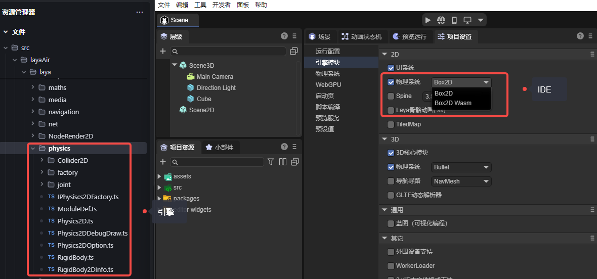
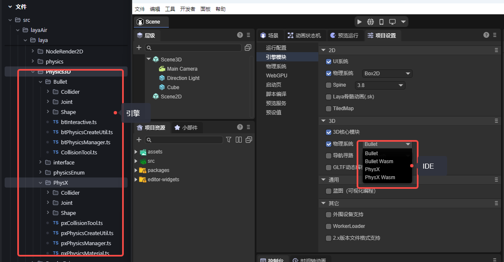
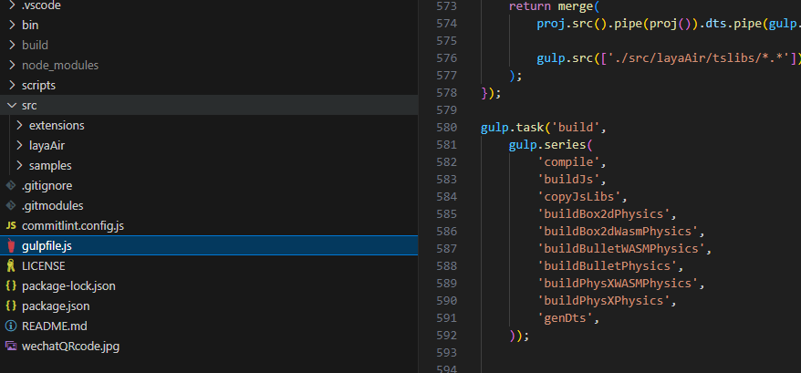
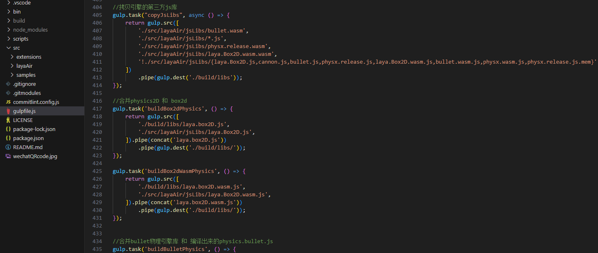
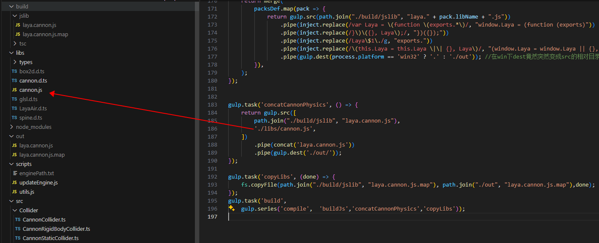
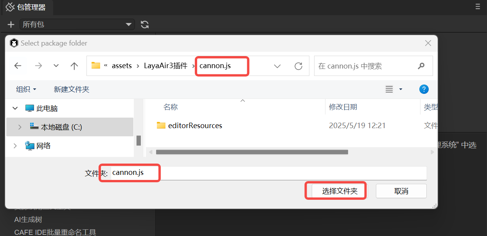
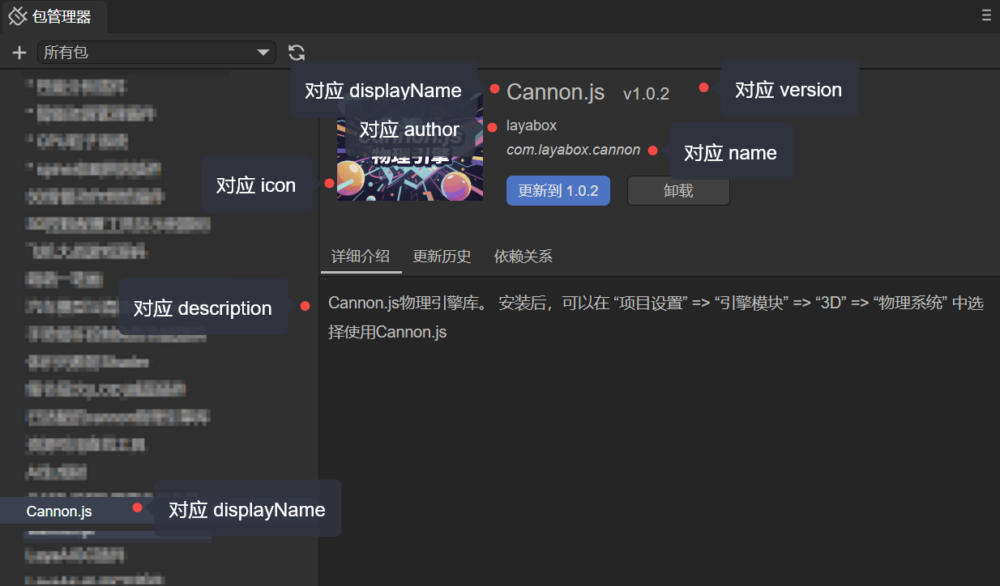
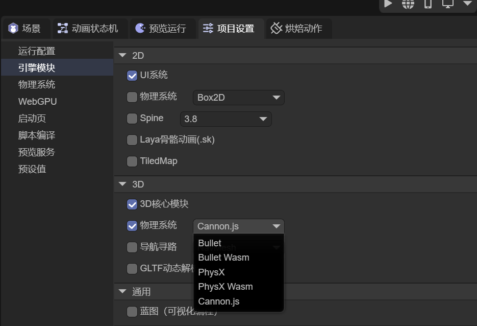
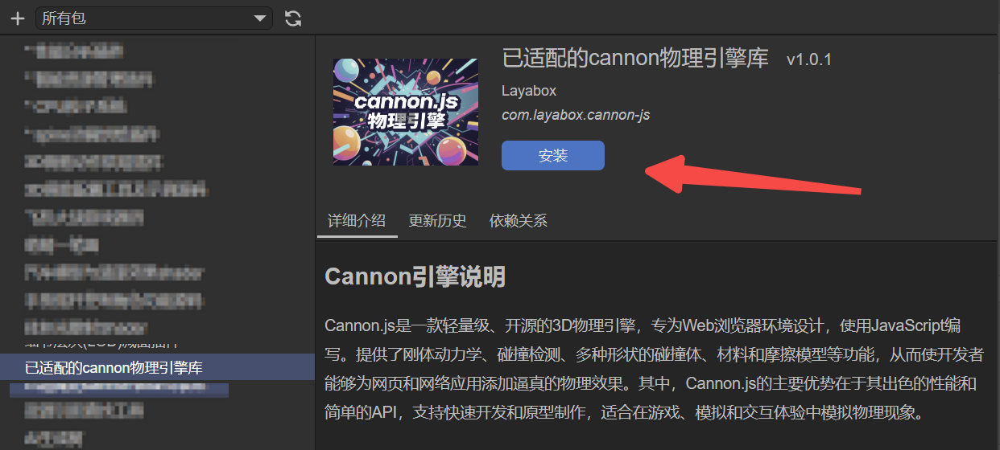

Custom Physics Engine Library
Author: Charley
The LayaAir engine has built-in third-party physics engines. For example, it uses Box2D for 2D and Bullet and PhysX for 3D.
We also provide a solution for using custom physics engine libraries. If you need to integrate another physics engine into the LayaAir engine, this document will guide you through the integration process.
1. Understanding the Built-in Physics Engines
1.1 Classes Corresponding to Built-in Physics Engines
The LayaAir3 engine has the Box2D physics engine built-in for 2D. It supports both JS and Wasm library files. The corresponding classes are located in the Physics directory of the engine source code, as shown in Figure 1-1:

(Figure 1-1)
For 3D, we have the Bullet and PhysX physics engines built-in. The corresponding classes are located in the Physics3D directory of the engine source code, as shown in Figure 1-2.

(Figure 1-2)
1.2 Compiling the Engine into a Physics Library
Built-in physics engines aren't just third-party engines used as-is.
Instead, the interfaces of the third-party physics engine are connected one-by-one to the LayaAir engine's interfaces, effectively integrating the third-party physics engine into the LayaAir engine. This allows developers to use various physics engines by switching them through the LayaAir engine's physics interfaces. They can also perform visual editing via physics components in the IDE.
The physics engine you ultimately use is a complete physics library created by integrating the third-party physics engine with the LayaAir engine's physics adaptation classes.
The process for custom physics engine libraries is the same as for built-in ones. The only difference is that the built-in engines are integrated by the official engine developers and included in the open-source engine, while custom engines are created by developers themselves. They do this by understanding and referencing the engine's integration process and interfaces, then adapting their chosen third-party physics engine and compiling the resulting physics library.
Now, let's analyze the compilation scripts in the engine's source code to understand which class files need to be compiled and integrated into a single, independent physics engine library.
First, open the build task in the gulp script. The subtask names alone clearly show the task for copying third-party engine libraries, copyJsLibs, and the subtasks for various physics engine libraries, as shown in Figure 1-3.

(Figure 1-3)
Looking at the task code, it becomes even clearer. The copyJsLibs task uses gulp.src() to specify the file rules to be processed, and then uses gulp.dest() to copy the matching files to a designated directory. In the physics engine library task code, it's also clear that each LayaAir physics engine library is a new library created by merging the LayaAir engine's physics adaptation code with a third-party physics engine's JS library.

(Figure 1-4)
Of course, a complete physics engine implementation, in addition to the corresponding third-party physics engine library, also includes basic physics functions like physics components. These are used as the physics engine's base library. Both 2D and 3D have a physics engine base library, laya.physics2D.js and laya.physics3D.js, respectively, as shown in Figure 1-5.

(Figure 1-5)
By analyzing the engine library's compilation process, we can see that the built-in physics engine is divided into three parts: the LayaAir engine's physics base and component implementation, the LayaAir engine's adapter library (adaptation code), and the third-party physics engine library.
Ultimately, the LayaAir engine's physics base and component implementation form the LayaAir engine physics base library. The LayaAir engine's physics adapter library is then merged with the third-party physics library to form a complete physics engine library.
2. Process for a Custom Physics Engine Library
Now that we understand the structure of LayaAir's built-in physics engine, in this section we'll cover the work involved in creating a custom physics engine library.
Customizing a physics engine requires the ability to read and write engine code. If you cannot complete the custom integration yourself, you can contact LayaAir_Engine on WeChat for commercial customization.
2.1 Selecting and Obtaining a Third-Party Physics Engine Library
While built-in physics engines like Box2D, Bullet, and PhysX are top-tier engines, some developers have specific needs. For example, a project may not require a high-precision physics engine, only basic physics features, and needs the library to be lightweight. Customizing the engine library allows these developers to choose the most suitable engine for their project.
Examples of lightweight engines include matter.js for 2D physics and cannon.js for 3D physics.
Developers can obtain the source code or pre-compiled library files for these physics engines from open-source websites.
Whether you compile the source code into an engine library or get a ready-made JS library, this completes the preparation for the "third-party physics engine library," one of the three parts of the physics engine library mentioned in the previous section.
2.2 Adapting a Third-Party Physics Engine
The other two parts, the LayaAir engine physics base library, do not need to be rewritten. You can just use the library that's compiled with the engine by default.
Developers only need to focus on adapting the physics engine's adapter library. To make it easier to understand how to adapt a third-party physics engine, we have created an independent, open-source physics engine adapter library, LayaAir3Physics-Cannon, outside of the LayaAir engine library. This example, using the Cannon physics library, provides a clear and concise understanding of the entire adaptation process.
Here's how to do it:
First, clone the source code of our adapted Cannon.js library from Git. The address is: https://github.com/layabox/LayaAir3Physics-Cannon.git
After cloning the source code project to your local machine, set up the project's compilation environment according to the open-source usage documentation (README.zh-CN.md) .
In this source project, the src directory is less complex and only includes the physics engine adaptation code, as shown in Figure 2-1:

(Figure 2-1)
Once you have read and understood the adaptation source code in src, you can use it as a reference to adapt other physics engine libraries.
During the adaptation process, there is one important point to remember. If you need to insert your own initialization process into the scene initialization flow (for example, some physics engines use wasm and need to download resources during initialization), you must use Laya.addBeforeInitCallback() to register your method. An example of how to use this is shown in Figure 2-2.

(Figure 2-2)
2.3 Merging into a Complete Physics Engine Library
After completing the adaptation, you can refer to the gulp script in the Cannon adaptation source code to compile your physics engine adapter source code. Then, merge it with the third-party physics engine library to create a single, independent physics engine library.
Using the Cannon adaptation source project as an example, let's analyze the build process in the gulp script to understand the work required.
First, you need to place the third-party physics engine library you obtained into the libs directory.
In this example, cannon.js is the original third-party physics engine library file, as shown in Figure 2-3. You can modify the gulp script to replace it with your own third-party physics engine library.

(Figure 2-3)
Second, after completing the adaptation, modify the name of the adapter library's output file in the gulp script. Replace laya.cannon with your own physics engine library's name and then execute the script. The script will automatically complete the compilation, merging, and output of the engine library.
3. Using a Custom Physics Engine Library
3.1 Importing the Local Physics Engine Library Installation Package
3.1.1 Configuring the Installation Package
The directory structure of the installation package is as follows:
. ├── package.json ├── laya.cannon.js └── editorResources └── cannon.png laya.cannon.js is the example engine library file name; developers can use their own names.
cannon.png is the installation package icon. Note that this icon must be placed under editorResources to be found by the installation package. This is similar to the role of the resources directory under the assets directory.
package.json is the critical configuration file for the installation package. Whether it's recognized as an installation package depends entirely on this file.
An example of the configuration file is as follows:
{
"name": "com.layabox.cannon",
"displayName": "Cannon.js",
"version": "1.0.2",
"description": "Cannon.js physics engine library.\n\nAfter installation, you can select Cannon.js in “Project Settings” => “Engine Modules” => “3D” => “Physics System”.",
"icon": "editorResources/cannon.png",
"author": "layabox",
"contributes": {
"engine": [
{
"name": "laya.physics3D",
"addons": [
{
"name": "Cannon.js",
"files": [
"laya.cannon.js"
]
}
]
}
]
}
}
3.1.2 Importing a Local Installation Package
Click the Package Manager option under the IDE's Developer menu. In the panel that pops up, click the + in the top-left corner and select the installation package directory, as shown in Figure 3-1.

(Figure 3-1)
Note: cannon.js here is the directory name, not the file name.
Once the installation package is successfully imported, the package list will show the information from package.json, as shown in Figure 3-2. This indicates a successful installation.

(Figure 3-2)
3.1.3 Using the Custom Physics Engine
After a successful installation, go back to Project Settings and Engine Modules. You will see that a new configuration for Cannon.js has been added under 3D -> Physics System, as shown in Figure 3-3.

(Figure 3-3)
Seeing this setting means the contributes configuration in package.json has taken effect. Now, switch to Cannon.js and refresh the IDE to apply the change.
"contributes": {
"engine": [
{
"name": "laya.physics3D",
"addons": [
{
"name": "Cannon.js",
"files": [
"laya.cannon.js"
]
}
]
}
]
}
Finally, let's explain the main parameters of contributes.
engine indicates this is a configuration for an engine module.
engine.name specifies which configuration under the engine module. The value laya.physics3D indicates the 3D physics engine configuration.
engine.addons indicates that a new option should be added under the laya.physics3D configuration.
engine.addons.name is the display name of the option.
engine.addons.files specifies which engine library this new option corresponds to (if it's not in the root directory of the installation package, you need to include the path, e.g., libs/laya.cannon.js).
3.2 Using an Engine Library from the Asset Store
If a third-party physics engine library is available in the Asset Store, such as Cannon.js, you can log in to the Asset Store and add it to your resources directly.
Cannon.js plugin address: https://store.layaair.com/info.php?id=10180
After adding it, you can find it in the IDE's Package Manager list and click Install, as shown in Figure 3-4.

(Figure 3-4)
That concludes the basic process for a custom engine.